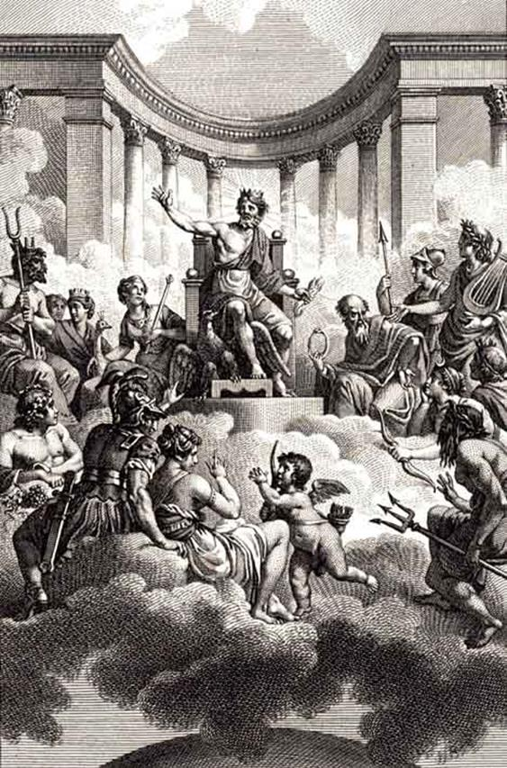
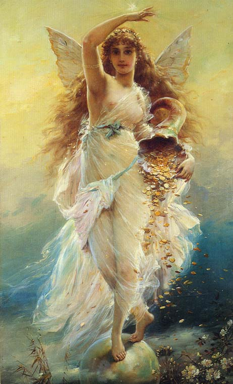
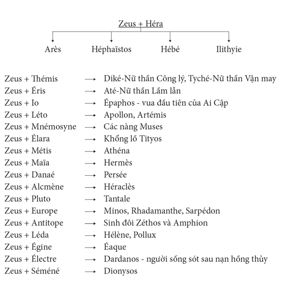

Thuở xưa khi Trời và Đất hình thành, những vị thần đầu tiên cai quản thế giới thần linh và Hy Lạp là mười hai vị nam, nữ Titan và Titanide. Titan Cronos sau khi cướp được ngôi báu của cha là Ouranos trở thành vị thần cầm đầu thế giới Titan. Người ta thường gọi thời đại các Titan cai quản bầu trời và mặt đất là thời đại các vị thần già, các vị thần cũ, hay còn gọi là thời đại Cronos hoặc thời đại Hoàng kim.
Zeus lật đổ Cronos mở đầu cho một thời đại mới, thời đại của những vị thần trẻ, những vị thần mới, thời đại mười hai vị thần của thế giới Olympe. Thật ra, thế giới Olympe không phải chỉ có mời hai vị thần mà có rất nhiều nam thần, nữ thần. Nhưng trên hết thế giới thần thánh đông đảo là mười hai vị nam thần, nữ thần tối cao, mà vị thần số một, đấng tối cao của tối cao, là thần Zeus giáng sấm sét, bậc phụ vương của thần thánh và loài người.
Ngọn núi Olympe cao chót vót, bốn mùa mây phủ là nơi cư trú vĩnh hằng của thế giới thần linh. Các thần ở trong một cung điện lộng lẫy làm bằng đồng đỏ rực và vàng chói lọi do bàn tay khéo léo của thần Thợ Rèn danh tiếng Héphaïstos (thần thoại La Mã: Vulcain), đứa con què của thần Zeus, xây dựng lên. Đường vào cung điện không phải dễ dàng vì cung điện Olympe chìm khuất sau những đám mây dày đặc dễ gì trông thấy mà lần đường tìm lối. Các vị thần, bất kể nam, nữ, ai ai từ dưới hạ giới lên hay trên thiên đình xuống, cũng phải qua nơi ở của ba tiên nữ, có khi bốn tiên nữ, có một cái tên chung là Heures-Thời gian, hoặc còn gọi là Bốn mùa, để các nàng mở cửa mây cho mà đi, nghĩa là các nàng cất lên những đám mây dày đặc bao quanh, che kín cung điện Olympe.
Cung điện Olympe tuy bốn mùa mây phủ song bên trong lại là nơi ở tuyệt diệu có một không hai. Chẳng có gió mưa ẩm ướt, sương tuyết lạnh lẽo. Một vòm trời sáng láng trong xanh như một vòm cây che cho cung điện. Ánh nắng mặt trời ở nơi đây vàng dịu, êm ả, chẳng thể làm rám da, cháy thịt, sạm đen khuôn mặt uy nghi, xinh đẹp của các vị thần. Các vị thần sống ở một nơi thanh khiết: mưa chẳng đến mặt, nắng chẳng đến đầu, không khí trong veo, ngày ngày hội họp bàn việc cai quản, điều hành thế gian hay mở tiệc vui chơi trong những cảnh vũ hội tưng bừng, đàn ca réo rắt.
Việc điều hành thế gian được phân chia ngay sau khi các vị thần Olympe chiến thắng thế hệ thần già. Zeus, Poséidon và Hadès, ba con trai của thần Cronos rút thăm chia nhau công việc cai quản vũ trụ và thế gian. Zeus cai quản bầu trời, Poséidon cai quản các biển khơi, còn Hadès cai quản thế giới người chết ở dưới lòng đất. Mặt đất và loài người thuộc quyền cai quản chung. Tuy nhiên, vì Zeus là vị thần tối cao cho nên Zeus cai quản cả thế giới thần linh và thế giới loài người. Còn cung điện Olympe là của chung thế giới thần thánh. Zeus là vị thần tối cao có uy quyền và sức mạnh rất lớn không một ai sánh bằng. Thần cai quản bầu trời nên có thể gọi gió, bảo mưa, dồn mây, gây bão, giáng sấm sét ầm vang, phóng chớp chói lòa. Zeus đã từng tự hào về sức mạnh vô địch của mình. Zeus có thể ném các thần xuống chốn Tartare mù mịt ở sâu tận thế giới của Hadès trị vì mà không có một vị thần nào có thể ngoi lên được. Zeus, để chứng tỏ sức mạnh hơn hẳn của mình, đã thách thức cả thế giới Olympe kéo co. Kéo co bằng một sợi dây vàng một đầu là Zeus ở đỉnh Olympe, còn một đầu là các nam thần, nữ thần ở dưới đất. Đương nhiên các vị thần không dám chấp nhận cuộc thách thức này, vì nếu đúng như lời Zeus nói, thì thật là vô cùng nguy hiểm: Zeus có thể kéo tuột các vị thần lên trời và kéo theo luôn cả đất lên, cả biển lên nữa. Zeus có thể để cho các vị thần cứ bám vào cái sợi dây vàng ấy nhưng còn đầu dây của Zeus, Zeus đem buộc vào một tảng đá ở đỉnh Olympe và như thế các vị thần sẽ bị treo lơ lửng giữa trời.
Sau khi ba anh em trai Zeus phân chia nhau cai quản thế gian thì một việc lớn nữa khiến Zeus phải lo toan là làm sao cho số thần của thế giới Olympe trước hết phải bằng số các Titan và Titanide trước đây, rồi sau đó sẽ phải tăng nhiều lên nữa, vì công việc cai quản thế gian và loài người ngày càng bộn bề nhiều chuyện. Anh em của Zeus chỉ có ba trai và ba gái. Như vậy là chỉ có sáu. Zeus và Héra, vợ Zeus, phải sinh con, đẻ cái để cho chúng mỗi người một việc chia nhau cai quản thế giới thần thánh và loài người. Tất nhiên, cuối cùng mọi công việc đều được thu xếp xong xuôi. Cung điện Olympe có mười hai vị thần nam, nữ, bằng với số Titan và Titanide trước kia. Mười hai vị thần Olympe là:
1 - Zeus (Jupiter) - vị thần tối cao cai quản thế giới thiên đình và những người trần thế, vị thần dồn mây mù giáng sấm sét có tiếng nói ầm vang.
2 - Hadès (Pluton) - vị thần cai quản thế giới âm phủ, có chiếc mũ tàng hình - Diêm vương.
3 - Poséidon (Neptune) - vị thần cai quản các biển khơi to nhỏ, vị thần Lay chuyển Mặt đất, có cây đinh ba gây bão tố - Thần Đại dương.
4 - Héra (Junon) - nữ thần, vợ Zeus, người bảo hộ cho Hôn nhân và Hạnh phúc gia đình, bảo hộ cho các bà mẹ và trẻ sơ sinh.
5 - Déméter (Cérès) - nữ thần cai quản sự phì nhiêu của đất đai, trông nom việc trồng trọt, mùa màng, và đặc biệt bảo hộ cho mùa lúa mì, thường gọi là nữ thần Lúa mì.
6 - Hestia (Vesta) - nữ thần của bếp lửa, của ngọn lửa trong bếp lửa lò sưởi ở gia đình, người bảo hộ cho sự quần tụ ấm cúng của con người trong gia đình, cho cuộc sống văn minh.
7 - Athéna (Minerve) - nữ thần Trí tuệ và Chiến tranh, Công lý và Nghề Thủ công, Nghệ thuật, con của Zeus.
8 - Aphrodite (Vénus) - nữ thần Tình yêu và Sắc đẹp.
9 - Apollon (Apollon) - con của Zeus và nữ thần Léto, thần Ánh sáng, Chân lý, Âm nhạc, Nghệ thuật, Người Xạ thủ có cây cung bạc.
10 - Artémis (Diane) - nữ thần Săn bắn, người Trinh nữ Xạ thủ, anh em sinh đôi với Apollon.
11 - Héphaïstos (Vulcain) - thần Thợ rèn Chân thọt, con trai của Zeus và Héra, thần Lửa và Nghề Thủ công.
12 - Arès (Mars) - thần Chiến tranh, con của Zeus và Héra.
Để giúp việc cho thế giới Olympe cai quản công việc của thế gian còn có hai vị thần, một nam thần và một nữ thần, lo việc truyền lệnh, thông tin liên lạc là Hermès (thần thoại La Mã: Mercure) và nữ thần Iris.
Trong cung điện Olympe không khí thật là uy nghiêm trang trọng. Thần Zeus ngồi trên ngai vàng vẻ mặt quắc thước nghiêm nghị. Dáng điệu của thần đường bệ, cử chỉ, phong thái khoáng đạt, ung dung khiến mới nhìn thấy Zeus, các vị thần đã thấy ngay được sức mạnh và quyền lực của đấng tối cao, một sức mạnh và quyền lực biểu hiện ra một cách tự nhiên, đàng hoàng, bình thản. Ngồi hầu bên ngai vàng của Zeus là nữ thần Hòa bình-Eiréné và nữ thần có cánh Thắng lợi-Niké. Khi nữ thần Héra xinh đẹp có đôi mắt bò cái và cánh tay trắng muốt bước vào cung điện thì các thần đều tiến đến đón nàng, chào hỏi nàng một cách thân tình, trân trọng. Rồi mọi người giãn ra hai bên mời nàng bước lên ngai vàng. Thần Zeus đứng dậy nghiêng đầu, bước xuống mỉm cười chào vợ, đưa tay ra đỡ lấy tay vợ dắt lên ngai vàng. Zeus và Héra ngồi bên nhau trên ngai vàng. Nữ thần Iris ngồi hầu bên Héra. Nàng sẵn sàng hoàn thành mọi mệnh lệnh của Héra một cách nhanh chóng khác thường. Với đôi cánh nhẹ nhàng và màu sắc rực rỡ, Iris có thể bay tới mọi chốn xa xăm cùng trời, cuối đất rồi trở về mà không để Héra than phiền về sự chậm trễ. Thần Hermès ngồi hầu bên Zeus. Thần không có cánh như nữ thần Iris nhưng truyền lệnh, thông tin nhanh chẳng kém Iris chút nào, bởi vì Zeus đã ban cho Hermès một đôi dép có cánh để thi hành phận sự. Với đôi dép này, Hermès chạy trên mây, lướt trên sóng, sà xuống núi, chui xuống biển, đâu đâu cũng đi tới được, kể cả việc xuống thế giới âm phủ. Thần còn chỉ đường dẫn lối cho khách bộ hành và các vị thần, còn cai quản nghề buôn bán, thông thương và, tệ hại nhất, là thần còn cai quản cả thói lừa đảo, gian dối, trộm cắp.

12 vị thần Olanhpơ (từ giữa, theo chiều kim đồng hồ): thần Zớt, Hêphaixtôx, Atêna, Apôlông, Hermex, Artêmix, Podeidông, Aphrôđitơ, Arex, Điônidôx, Hađex, Hextia, Đêmêtê, Hêra
Các vị thần bước vào bàn tiệc. Tiếng cười nói, đàn ca tưng bừng, rộn rã. Các nữ thần Charites và các nàng Muses với vẻ đẹp duyên dáng và uyển chuyển múa theo tiếng nhạc, khi thì quần tụ lại thành một vòng tròn, khi thì tản ra thành từng đôi một, nhịp nhàng, đều đặn, hài hòa khiến các thần gật gù tấm tắc khen ngợi. Nữ thần Hébé (thần thoại La Mã: Juventas) con gái yêu của Zeus và Héra, được giao cho việc rót rượu dâng mời các thần. Đây là loại rượu thánh riêng của thế giới Olympe, ai uống vào sẽ trẻ mãi không già, sống hạnh phúc, vui tươi không bao giờ biết đến tuổi già và cái chết. Cùng dâng mời rượu thánh và thức ăn thần với Hébé là chàng trai xinh đẹp Ganymède, chàng xưa kia ở đất Tiểu Á, là con của vua Tros, vị vua đã xây dựng thành Troie, và tiên nữ Callirhoé, con gái của thần sông Scamandre. Thần Zeus đắm say, mê mệt vẻ đẹp của chàng đã hóa mình thành một con đại bàng sà xuống cắp lấy chàng tha về thế giới Olympe, cho chàng gia nhập thế giới thần thánh. Ganymède được thần Zeus ban cho sự bất tử. Nhưng không phải chỉ có Hébé và Ganymède chuyên dâng rượu thánh và thức ăn thần cho các vị thần. Thần Thợ Rèn Chân thọt-Héphaïstos nhiều khi cũng đỡ một chân, một tay cho hai bạn trẻ. Những khi Héphaïstos dâng rượu thì bàn tiệc lại vui rộn hẳn lên. Tay cầm một chiếc bình lớn đầy rượu thánh ngọt lịm, thần rót tuần tự mời các vị thần từ bên phải trở đi. Cứ thế hết tuần rượu này đến tuần rượu khác. Héphaïstos-Chân thọt khập khiễng, lăng xăng chạy đi chạy lại, cà nhót cà nhắc khiến các vị thần không nhịn được cười. Và họ cứ thế cười nói, yến tiệc, đàn hát, vui chơi cho đến khi mặt trời xế bóng.
Trong những buổi tiệc vui như vậy, mọi người đều bình đẳng, không ai là người không được tham dự, không ai là người không được thưởng thức rượu thánh và những thức ăn thần. Ai cũng được nghe tiếng đàn lia thánh thót làm say lòng người của thần Apollon và được nghe tiếng hát du dương véo von của các nàng Muses, con của đấng phụ vương Zeus.
Ngày nay Ganymède chuyển nghĩa, mang một ý bông đùa, ám dụ chỉ người hầu rượu, người phục vụ trong các bữa tiệc.
Từ cung điện Olympe trong các cuộc họp của các vị thần hay trong những buổi yến tiệc, thần Zeus và các vị thần điều khiển, sắp xếp mọi công việc của thế giới loài người và thế giới thần thánh. Vận mệnh của loài người, cuộc sống của họ sung sướng hay đau khổ tùy thuộc vào thần thánh, trước hết là thần Zeus. Zeus có hai cái chum lớn để ngay cổng vào cung điện; có người kể lại, Zeus chôn dưới đất một chum chứa những điều lành, một chum chứa những điều dữ. Zeus lấy những điều lành, điều dữ từ đó ra đem ban phát cho những người trần thế. Ai mà được Zeus trộn đều hai thứ rồi phân phát cho thì người đó trong cuộc sống gặp cả niềm vui và nỗi buồn, hạnh phúc và đau khổ. Ai không may chỉ nhận được tặng phẩm của Zeus lấy ra từ cái chum đựng điều dữ thì cuộc đời người đó khốn khổ vô cùng: đói khát, rách rưới, không nhà không cửa, không nơi nương tựa, phải đi lang thang, hành khất bị mọi người khinh rẻ, và sống không có niềm hy vọng. Vì lẽ đó những người trần thế phải kính trọng các vị thần, chăm nom đến việc thờ cúng và dâng lễ hiến tế.
Cùng điều hành luật lệ với thần Zeus còn có nữ thần Thémis uyên thâm. Chính nữ thần là người đã thiết lập ra Quy luật, Trật tự, Sự Ổn định và Luật pháp trong thế gian để cai quản và bảo đảm Công lý. Sự hiểu biết uyên thâm của Thémis khiến cho nàng có thể tiên báo, tiên đoán được nhiều việc của tương lai, số phận thần thánh và loài người. Tính công bằng, chính trực và thói quen nghiêm minh của Thémis đã khiến người Hy Lạp cổ xưa khâm phục và biết ơn, tạc tượng vị nữ thần một tay cầm cân, một tay cầm thanh kiếm, mắt bịt một băng vải để chứng tỏ sự vô tư, không thiên vị. Theo lệnh của Zeus, nữ thần Thémis triệu tập các cuộc họp của các vị thần ở thế giới Olympe. Cả đến việc những cuộc họp của nhân dân ở dưới hạ giới cũng là do Thémis khơi nguồn, gợi ý hoặc chính nàng đứng ra chủ trì. Để theo dõi việc thi hành pháp luật còn có nữ thần Diké (thần thoại La Mã: Justice) con của Zeus và Thémis. Diké là vị nữ thần của Chân lý, Công lý, Sự thật. Nữ thần chuyên theo dõi việc thi hành và giám sát luật pháp trong thế giới loài người để báo về cho Zeus biết những việc đổi trắng thay đen, hà hiếp, bức hại người lương thiện, bôi nhọ công lý, xuyên tạc, che giấu sự thật. Vì thế Diké ghét cay ghét đắng thói dối trá, không trung thực. Theo lệnh của Zeus, Diké phải chịu trách nhiệm trừng phạt những kẻ đảo điên, ỷ thế chuyên quyền bất chấp công lý. Nữ thần, với thanh gươm công lý của mình, phải đâm trúng trái tim những kẻ coi thường luật pháp của thần thánh. Người Hy Lạp xưa kia thường tạc tượng Diké với cây chùy cầm tay. Nhưng rồi vị nữ thần chính trực và đức hạnh này không thể sống nổi với người trần chúng ta được. Thời đại Hoàng kim qua đi, con người ngày càng hư hỏng, đồi bại, quay quắt, điên đảo, trắng trợn đến mức Diké bất lực. Nữ thần bèn cùng với người bạn gái thân thiết là Liêm sỉ (Pudeur) bay về trời. Từ đây nữ thần đổi tên là Astrée (thần thoại La Mã: Virgo) nghĩa là “ngôi sao” hoặc “tinh tú”, “tinh cầu”. Như vậy có nghĩa là công lý chân chính từ đó trở đi chỉ có thể tìm được ở bầu trời cao xa vời vợi, lấp lánh những vì sao.
Zeus tuy là vị thần tối cao, quyền uy và sức mạnh hơn hẳn các vị thần ở thế giới Olympe, ấy thế mà Zeus vẫn không phải là đấng tối cao toàn năng, toàn diện, toàn quyền, toàn mỹ. Trên Zeus còn có một sức mạnh và quyền lực quyết định hết thảy mà chẳng vị thần nào hay một số người trần thế nào đảo ngược được. Đó là Số mệnh, Số mệnh này do ba chị em nữ thần Moires cai quản. Nàng Clotho quay cuộn chỉ cho nữ thần Lachésis giám định và Atropos cầm kéo cắt. Số phận của thần thánh và người trần nằm trong cuộn chỉ, sự giám định cùng với nhát kéo khắc nghiệt đó. Nhưng cũng có lúc Số Mệnh không nằm trong cuộn chỉ của ba chị em nữ thần Moires mà nằm trong cái cân của thần Zeus. Thần Zeus cầm cân, cân miếng đồng số mệnh của ai, nếu đĩa cân bên nào nặng nghiêng về một bên thì chẳng thể nào cứu vãn được; số mệnh người đó hướng về đất, người đó phải chết. Như trên đã kể, ba chị em Moires là con của thần Đêm tối-Nyx, nhưng lại có truyền thuyết kể ba chị em Moires là con của nữ thần Thémis. Và các nữ thần Heures-Thời gian cũng là con của nữ thần Thémis.
Tuy Zeus có thể ban hạnh phúc cho những người trần thế chúng ta bằng những tặng vật lấy ra từ cái chum đựng điều lành, nhưng hạnh phúc trong cuộc đời những người trần đoản mệnh chúng ta lại còn từ ân huệ của nữ thần Tyché (thần thoại La Mã: Fortuna) nữa. Nàng là nữ thần của Vận may và những điều ngẫu nhiên của số phận. Người thì nói nàng là con của Okéanos và Téthys, người thì bảo nàng là con của Zeus. Nữ thần Tyché cầm trong tay cái sừng của sự sung túc. Nàng dốc những hoa thơm, trái chín, lúa đẫy hạt, cành sai quả và rau, đậu, ngô, mì, kê... đựng trong sừng xuống thế gian. May mắn cho ai nhận được những tặng phẩm ân huệ thiêng liêng đó thì cuộc đời họ làm ăn sẽ chẳng gặp trắc trở, khó chịu. Thời tiết đến với mùa màng của họ sẽ thuận hòa, trồng gì trúng nấy và... nói tóm lại là gặp nhiều may mắn trong cuộc đời, nếu như không phải gặp may suốt đời! Thời cổ đại đã hình dung nữ thần Tyché là một thiếu nữ đứng trên một quả cầu hoặc một cái bánh xe, một tay cầm cái bánh lái của một con thuyền còn tay kia ôm chiếc sừng của sự sung túc, mắt nàng che kín bằng một băng vải. Thật là ý nhị biết bao! Chả thế mà người Việt Nam chúng ta có câu Trời không có mắt. Đúng thế, nếu có mắt thì đã không có cái gọi là may rủi, ngẫu nhiên. Và trong cuộc sống, như chúng ta biết, bên cái gọi là tất yếu không thể không có cái gọi là ngẫu nhiên, cái ngoài sự tính toán của con người, cái ngoài cái “có mắt” của con người. Vì thế bên nữ thần Thémis tượng trưng cho Quy luật phải có chỗ cho Tyché. Trong những tranh vẽ nữ thần Tyché, có khi ta thấy ngoài những đặc điểm đã kể trên, còn miêu tả Tyché không ôm chiếc sừng của sự sung túc mà đang cầm nó dốc xuống cho những phúc lợi rơi xuống trần.

Nữ thần Tikhê
Quyền lực của Zeus lớn lao là thế song Zeus nhiều lúc phải chịu lép vế trước quyền lực của một nữ thần, không phải nữ thần Héra, vợ Zeus, tính nết vào loại “đời xưa mấy mặt, đời này mấy gan”, mà là nữ thần Lầm lẫn-Até. Zeus đã bao phen lầm lẫn và cho đến một lần, bực tức quá vì sự tác oai tác quái của vị nữ thần này, Zeus quẳng ngay cô con gái đáng ghét ấy xuống trần và cấm cửa không cho trở về thiên đình. Até là con của Zeus và nữ thần Bất hòa-Éris.
Các vị thần ở thế giới Olympe đều khiếp sợ trước quyền lực và sức mạnh của Zeus nhất là khi Zeus nổi cơn thịnh nộ. Người con của Cronos chỉ chau mày vung tay một cái là mây đen ùn ùn kéo đến, sấm động, chớp giật và sét nổ xé rách bầu trời, lửa cháy bừng bừng, khói mù khét lẹt. Mỗi khi Zeus đi đâu trở về cung điện, các vị thần đều phải kính cẩn ra đón đấng phụ vương, không ai dám bỏ đi làm việc khác hay đứng yên tại chỗ đợi Zeus đi tới mới cung kính chào hỏi. Tính khí Zeus nóng như lửa. Mỗi khi Zeus nổi nóng chẳng ai dám can ngăn vì như thế chỉ làm Zeus thêm phần điên tiết. Các vị thần đã từng chứng kiến nhiều trận lôi đình của Zeus và đã có một tấm gương: thần Héphaïstos vì thiện ý muốn can ngăn cơn nóng giận của Zeus mà phải mang tật suốt đời.
Zeus ngồi trên ngai vàng, tay cầm cây vương trượng bằng vàng do bàn tay khéo léo của thần Thợ rèn-Héphaïstos tạo nên. Một con đại bàng, con chim yêu quý nhất của Zeus, đậu bên. Cạnh Zeus, hoặc ở dưới chân Zeus còn có một cái khiên bằng da dê dày không biết đến mấy lần, mấy lớp, bọc ngoài bằng một lượt vẩy các loài bò sát cứng rắn như đồng, như sắt. Viền theo vành khiên là những con rắn độc ngoằn ngoèo nom rất ghê sợ. Zeus chọn cây sồi làm người phát ngôn cho mình, truyền đạt những lời phán bảo, phán đoán về tương lai, về cách xử thế cho những người trần bấy yếu, đoản mệnh.
Những người trần thế hàng năm đến Dodone, xứ sở của những rừng sồi, lắng nghe tiếng lá xào xạc để đoán biết những lời sấm ngôn, truyền phán của Zeus. Nhưng không phải người trần thế nào cũng biết được nghệ thuật nghe tiếng lá cây. Chỉ có những nhà tiên đoán, những người chuyên làm nghề tư tế mới có thể tiếp xúc với thứ ngôn từ bí ẩn, thiêng liêng đó và giải thích cho mọi người biết. Lại có khi Zeus thể hiện ý chí của mình và những lời phán bảo qua lối bay của các giống chim. Và tất nhiên cũng chỉ có những nhà tiên tri và những viên tư tế mới có tài năng nhìn lối bay, đường bay của các giống chim mà đoán hiểu được những điều thần muốn nói.
Cảnh sinh hoạt của thế giới Olympe và của đấng phụ vương Zeus là như thế. Nhưng không phải chỉ có thế. Cung điện Olympe có biết bao nhiêu vị thần: mười hai vị thần tối cao và biết bao nhiêu vị thần cấp thấp chia nhau cai quản công việc của thế giới loài người. Vì thế giữa loài người với các vị thần xảy ra không ít những chuyện phiền toái. Lại còn giữa các vị thần với nhau nữa. Cũng nhiều chuyện lôi thôi, phức tạp, phiền toái không kém gì thế giới loài người chúng ta, có khi lại còn hơn... rất nhiều nữa là đằng khác. Vì thế, cung điện Olympe dưới quyền cai quản của Zeus xem ra thì rất thanh bình nhưng thật ra có những cuộc họp khá nảy lửa, sóng gió, thậm chí kéo dài tới chín ngày trời, ý kiến bất đồng rất sâu sắc. Thần Zeus nhiều khi phải xử các vụ kiện cáo, khiếu nại giữa các vị thần hết sức lôi thôi, đau đầu nhức óc. Các vị thần lại luôn luôn đi đi về về cho nên cung điện Olympe tuy bốn mùa mây phủ song xem ra bận rộn khác thường. Thế giới Olympe điều khiển thế gian quả không phải là một công việc dễ dàng.
Gia hệ Zeus
